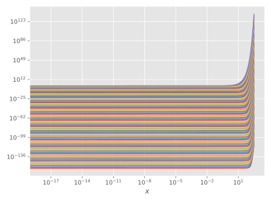
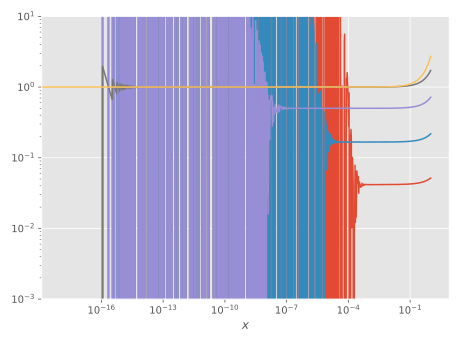

φₖ functions
Definition
These are defined recursively through
An alternate definition is
Accuracy
Accuracy for $k=1$
This is a common example of catastrophic cancellation; for small $\abs{z}$, $\ce^z - 1\approx 0$, and we thus divide a small number by a small number. By employing a trick shown by e.g.
Higham, N. (2002). Accuracy and stability of numerical
algorithms. Philadelphia: Society for Industrial and Applied
Mathematics.we can substantially improve accuracy:

The solid line corresponds to the naïve implementation $\eqref{eqn:phi-1-naive}$, whereas the dashed line corresponds to the accurate implementation $\eqref{eqn:phi-1-accurate}$.
Accuracy for $k > 1$
For a Taylor expansion of a function $f(x)$, we have
We now Taylor expand $\ce^{(h-s)z}$ about $z=0$:
With this, we now calculate the definite integral appearing in the definition of $\varphi_k$:
For the case we are interested in, $h=1$ and the first integral is equivalent to Euler's beta function:
which, for integer $k,i$ has the following value
Inserting this into the integral (having set $h=1$), we find
where we have made explicit the dependence of the Lagrange remainder $R_n(s,\zeta)$ on $s$.
Some numerical testing seems to indicate it is enough to set $n=k$ in the Taylor expansion $\eqref{eqn:phi-k-expansion}$ to get accurate evaluation of $\phi_k(x)$ for small $\abs{x}$, $x\in\mathbb{R}$. For general $z$, the amount of required terms seems higher, so $n$ is currently set to $10k$.

The plot includes $\phi_k(z)$ for $k\in\{0..100\}$. To illustrate the rounding errors that would occur if one were to use the recursive definition $\eqref{eqn:phi-k-recursive}$ directly , we plot $\varphi_k(x)$, but for $k\in\{0..4\}$ only:

Reference
MatrixPolynomials.φ₁ — Function.φ₁(z)Special case of φ for k=1, taking care to avoid numerical rounding errors for small $|z|$.
MatrixPolynomials.φ — Function.φ(k, z)Compute the entire function $\varphi_k(z)$, $z\in\mathbb{C}$, which is recursively defined as [Eq. (2.11) of Hochbruck2010]
with the base cases
and the special case
This function, as the base case φ₁, is implemented to avoid rounding errors for small $|z|$.
φ(k)Return a function corresponding to φₖ.
Examples
julia> φ(0)
exp (generic function with 14 methods)
julia> φ(1)
φ₁ (generic function with 1 method)
julia> φ(2)
φ₂ (generic function with 1 method)
julia> φ(15)
φ₁₅ (generic function with 1 method)
julia> φ(15)(5.0 + im)
1.0931836313419128e-12 + 9.301475570434819e-14im